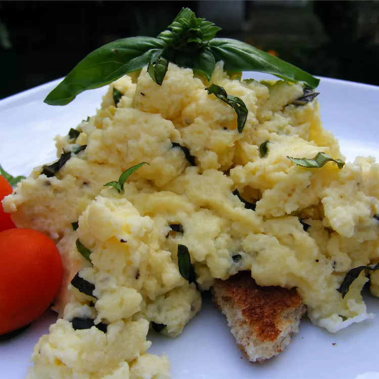

Creamy Cheesy Scrambled Eggs with Basil

Description
Sour cream makes these eggs rich and creamy and the basil adds a little kick of flavor. You can use pepperjack cheese and a little garlic and onion (powdered or fresh) for extra flavor.
Ingredients
- 4 eggs
- 3 tablespoons sour cream
- ½ cup shredded mozzarella cheese
- salt and pepper to taste
- 2 teaspoons butter
- 1 tablespoon minced fresh basil
Steps
- Whisk eggs and sour cream in a bowl until creamy and smooth. Mix in cheese. Season with salt and pepper.
- Melt butter in a skillet over medium heat. Pour in egg mixture; cook, stirring constantly, until eggs reach the desired consistency. Mix in basil during final minutes of cooking.